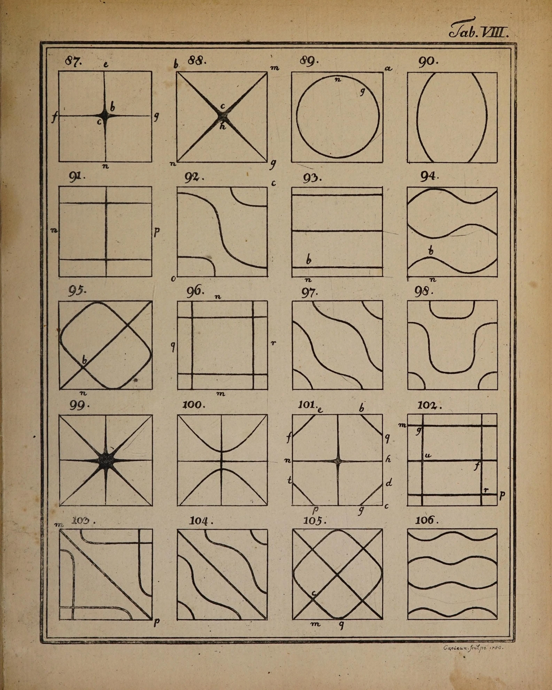

In 1787 Ernst Florens Friedrich Chladni, a lawyer’s son from Wittenberg who had taken a degree in law to please his father and then given it up for physics, published a short book in Leipzig called Entdeckungen über die Theorie des Klanges, discoveries in the theory of sound. He had been working at a trick for years. He held a thin square plate of glass or brass still at one point, scattered sand over it, and drew a violin bow down its edge. The plate sang, and the sand moved. It jumped away from the parts of the plate that were swinging and came to rest along the lines that stood still, so that in a second or two the note had drawn its own picture. Touch the edge with a fingertip somewhere else, bow at another place, and a higher note drew a different figure.
He had no camera and no way to fix the sand, so he copied each figure by eye, and a Leipzig engraver, Capieux, cut them in copper: well over a hundred of them on eleven plates at the back of the book, numbered, with small letters for the places where he had held the plate and where the bow went. This is the eighth sheet, twenty square plates, figures 87 to 106, from the Getty Research Institute’s copy.

Look at the drawings closely and they are full of sand. The cross of figure 87 swells at its centre into a dark star, because grains run along a nodal line and pile up where two lines meet; the eight rays of figure 99 meet in a heap. The lines are thin where the plate crosses them steeply and wide where it barely moves on either side. Chladni did not invent any of this. He drew what the sand did.
He spent the rest of his life on the road with his plates and the glass instruments he built, earning his keep from lectures in Europe’s drawing rooms. In 1808 he brought them to Paris. Early the next year Laplace and the physicists of the Institut presented him to Napoleon, who watched the sand gather, asked questions, gave Chladni six thousand francs to publish his Traité d’acoustique in French, and had the Institut set a prize, a medal of a kilogram of gold, for a mathematical theory of vibrating elastic surfaces that would agree with experiment.
Most of the mathematicians in Paris thought it could not be done, and only one person entered. Sophie Germain had taught herself mathematics from her father’s library and had sent her work to Lagrange under a man’s name. Her first memoir, in 1811, was turned down: its calculus had mistakes, though Lagrange, one of the judges, worked the right equation out of her assumptions. Her second, in 1813, got an honourable mention. Her third won the prize in January 1816, the first the Academy had given to a woman. She did not go to the ceremony. Her conditions for a free edge were still not right; Kirchhoff settled them in 1850, and in 1909 Walther Ritz at last computed the figures of a free square plate well enough to set beside Chladni’s sand.